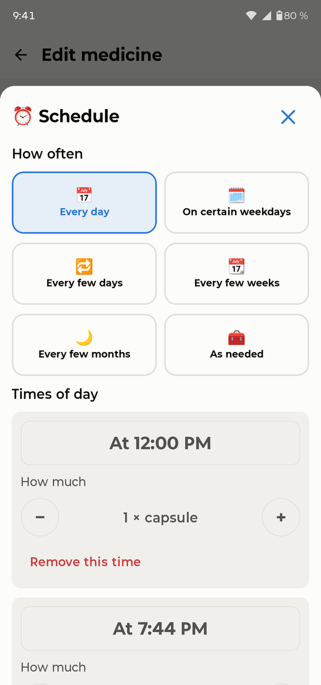
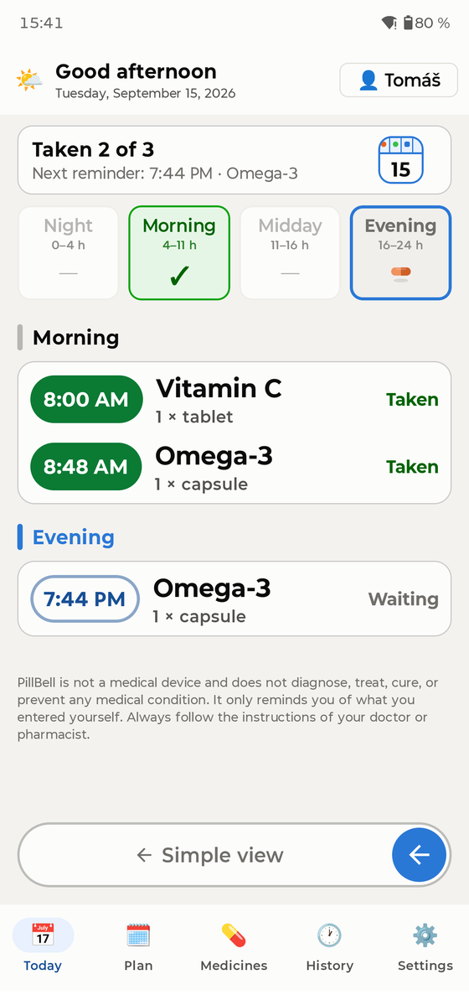
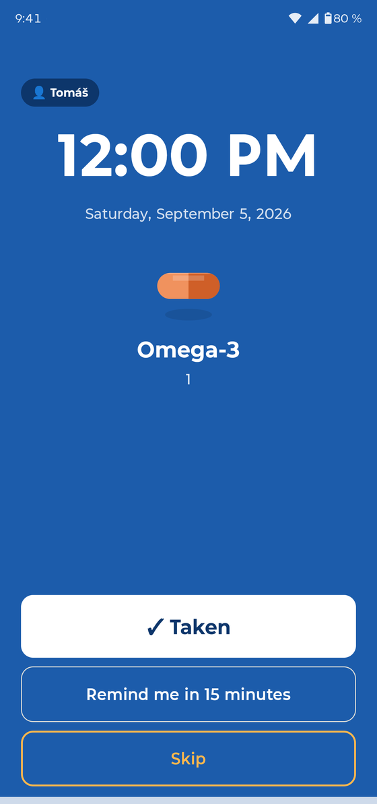
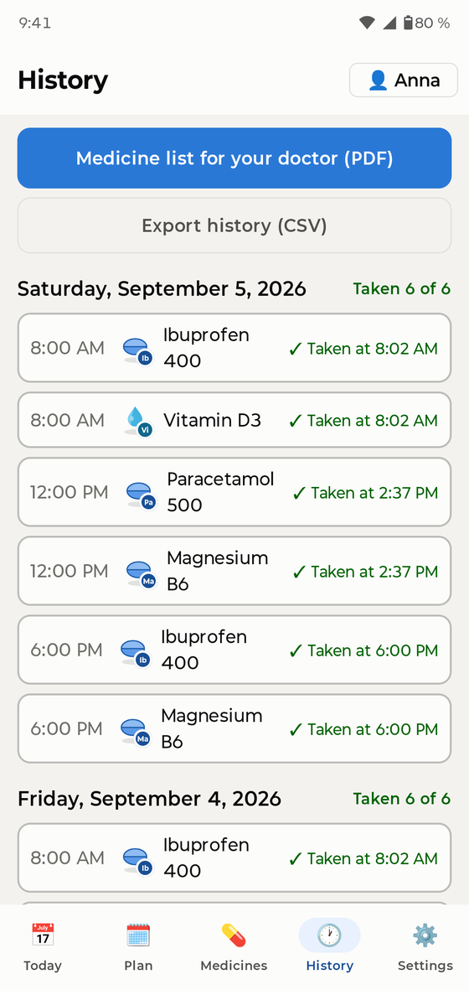
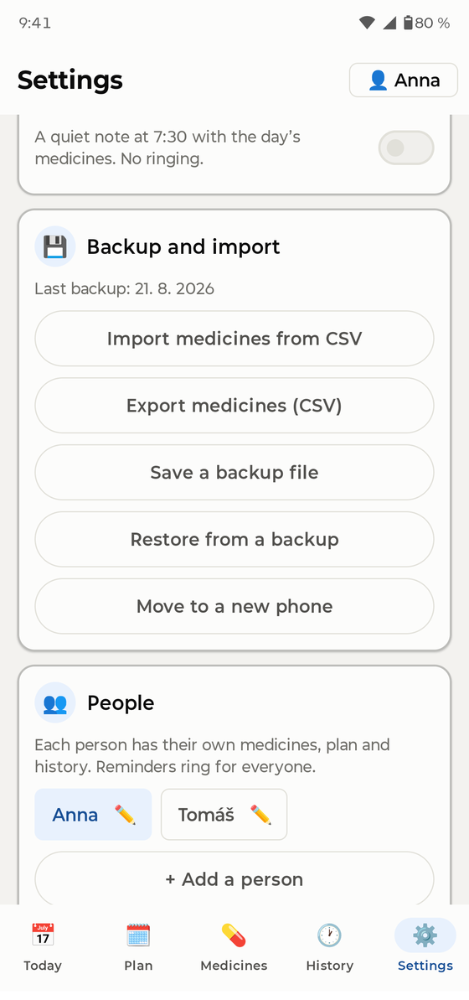

Primer inicio
Al abrir PillBell por primera vez, un breve asistente pide algunos permisos. Cada uno tiene un único propósito: que el recordatorio suene de verdad. PillBell no tiene acceso a Internet y no recopila nada:
- Notificaciones — sin ellas no puede aparecer ningún recordatorio.
- Alarmas y recordatorios — para que PillBell suene en el minuto exacto.
- Recordatorios a pantalla completa — la alarma puede encender toda la pantalla, como un despertador.
- Batería / segundo plano — evita que el teléfono duerma a PillBell. El asistente muestra los pasos exactos para su marca de teléfono (Samsung, Xiaomi y otras son distintas).
- Acceso a «No molestar» — el recordatorio pasa incluso con No molestar activado.
Añadir un medicamento

Vaya a Medicamentos → Añadir medicamento. Un asistente de cuatro pasos pregunta el nombre, la forma y la dosis, el horario, la cantidad por toma y muestra un resumen. También puede añadir una foto del envase, para saber siempre qué buscar.
PillBell maneja todos los horarios habituales: horas fijas al día (sin límite), varias veces al día, cada N horas, cada N días, días concretos de la semana, ciclos tipo 21 días / 7 de descanso, medicamentos semanales y mensuales, días alternos y dosis parciales o variables («1 o 2 comprimidos»).

La pantalla Hoy

Hoy funciona como un pastillero diario: cuatro compartimentos — Noche, Mañana, Mediodía, Tarde. Un ✓ verde significa hecho; los iconos de pastillas muestran lo que aún espera.
- Ve todo el día de una vez, dividido en Noche, Mañana, Mediodía y Tarde. Al tocar un compartimento la lista se desplaza hasta esa parte.
- Toque una toma para confirmarla o corregirla: Tomada, Tomada a otra hora, Saltada, o de vuelta a No tomada.
- Puede confirmar una toma en cualquier momento del día. Tomarla más de 30 minutos antes se registra honestamente como «Tomada antes».

La pestaña Plan muestra toda la semana como un pastillero: las columnas son días y las filas momentos del día. Un ✓ verde significa vaciado, un número cuántas tomas esperan y un cero que no hay nada. Toque un día para abrir su detalle; deslice para la semana siguiente.
Cuando suena

En el minuto programado, PillBell suena como un despertador — a pantalla completa, incluso con el teléfono bloqueado, y sigue sonando hasta que usted responde. También atraviesa el modo No molestar.
- ✓ Tomada — confirma la toma y detiene la alarma.
- Recordarme en 15 minutos — la pospone; la aplicación muestra después «Pospuesto hasta las HH:MM».
- Saltar — registra la toma como saltada a propósito.
Si nadie reacciona, el recordatorio se repite al cabo de un rato. En la pantalla de bloqueo, los nombres de los medicamentos están ocultos por defecto (privacidad) — puede permitirlos en Ajustes si vive solo.
Modo simplificado

Para quien le cuesten los teléfonos: Ajustes → Pantalla → Simplificada. Toda la aplicación se convierte en una gran tarjeta — qué toca tomar y un gran botón «Ya lo tomé». Para volver, deslice el control «Vista completa» de abajo.
Perfiles familiares

Un teléfono puede recordar a toda la casa. Añada personas en Ajustes → Personas. Cambie entre ellas con el botón del nombre arriba a la derecha de Hoy — también muestra quién tiene tomas pendientes. Los recordatorios dicen para quién son («Anna: 2 medicamentos»).
Widgets

Mantenga pulsado un hueco vacío de la pantalla de inicio → Widgets → PillBell. Hay dos tipos, cada uno en versión clara y oscura:
- Resumen de hoy — toda la casa: progreso, próxima hora y medicamentos pendientes.
- Widget personal (pequeño) — al añadirlo elige de quién muestra los medicamentos. Ponga dos juntos: «Anna» y «Tomás».
Historial y PDF para el médico

La pestaña Historial guarda los últimos 30 días. Con un toque crea una lista de medicamentos en PDF para su médico — medicamentos, dosis y con qué regularidad los tomó. Todo puede exportarse también como CSV, y los registros antiguos pueden corregirse.
Botiquín y existencias

Los medicamentos «según necesidad» (analgésicos, gotas…) viven en el botiquín — sin horario; se anotan cuando se toman. En los medicamentos regulares puede controlar las existencias: PillBell descuenta y avisa antes de que se acaben.
Copias de seguridad — importante

Vaya a Ajustes → Copia de seguridad y exporte una copia (un único archivo que incluye las fotos). Guárdela donde quiera — envíesela por correo, súbala a una nube, cópiela al ordenador. Para cambiar de teléfono: instale PillBell, restaure la copia y listo — todos los recordatorios se rearman solos. PillBell le recuerda la copia con suavidad una vez al mes.
Recordatorios fiables

- Complete el paso de batería del asistente (también está en Ajustes). Los fabricantes duermen las aplicaciones para ahorrar batería — es la causa n.º 1 de que los recordatorios «se callen».
- Nunca fuerce el cierre de la aplicación.
- Samsung: mantenga PillBell fuera de «Aplicaciones inactivas». Xiaomi: permita el «Inicio automático». La aplicación le lleva a la pantalla correcta.
- Revise Ajustes → Fiabilidad — PillBell registra cada alarma y muestra honestamente cuántas sonaron a tiempo en los últimos 30 días.
Preguntas frecuentes
Un recordatorio no sonó. ¿Y ahora? Abra Ajustes → Fiabilidad y el asistente de batería. En 9 de cada 10 casos el ahorro de batería silenció la aplicación — el asistente lo corrige. Compruebe también que la aplicación no fue cerrada a la fuerza.
¿Funciona con No molestar? Sí, si concedió el acceso durante la configuración.
¿Y los viajes y husos horarios? Su horario queda anclado a la hora de casa — los intervalos entre tomas nunca se desplazan al volar.
¿Puedo bloquear la aplicación? Sí — Ajustes → Bloqueo de la aplicación (huella/PIN). La alarma sonando y «Tomada» funcionan siempre sin desbloquear.
¿Qué idiomas? La aplicación habla español, inglés, alemán, checo, francés, italiano, polaco, neerlandés, portugués y ucraniano.